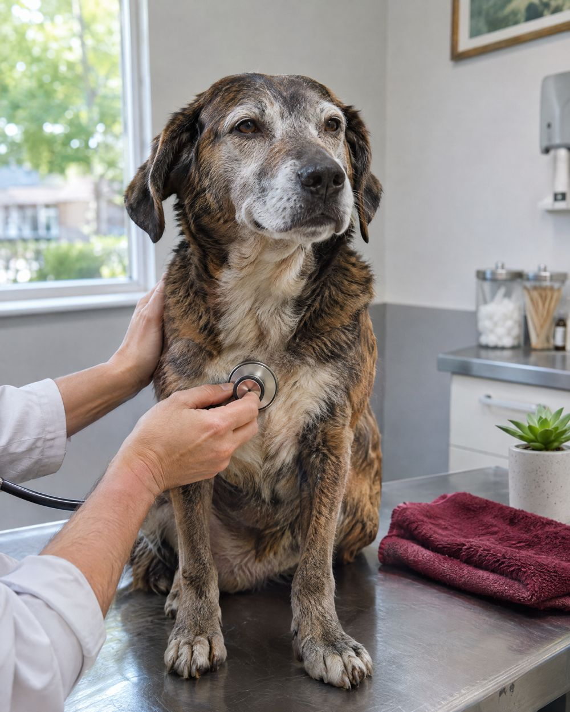

Veterinary care in New York
Maspeth Animal Hospital
Maspeth Animal Hospital provides veterinary medical services for dogs and cats on Grand Avenue in Maspeth, Queens. Open seven days a week, the clinic offers wellness check-ups, vaccines, veterinary surgery, ultrasound, echocardiograms, digital X-rays, and in-house laboratory testing. Urgent care and walk-in patients are accepted.

Tell us what you need. We'll write the text.
Pick the details and send them as a text message, then ask for a time and a price.
What clients say
Dedicated doctors and friendly receptionistsPet owners consistently praise the veterinary team, specifically highlighting Dr. Henin, Dr. Allam, and front desk coordinators such as Adrianna and Cristina. Reviewers note that staff members are respectful, attentive, and genuinely invested in patient welfare, making visits reassuring and well organized.
Loving and thoughtful patient careClients describe a gentle, affectionate approach toward both cats and dogs during medical examinations and surgical follow-ups. Attendants handle pets carefully to minimize discomfort, helping anxious kittens and ailing pets feel calm while receiving necessary veterinary attention.
Successful surgical and diagnostic outcomesSeveral reviewers credit the clinic with life-saving emergency surgeries and successful long-term treatment plans for sick animals. From routine immunizations and travel certificates to urgent surgical interventions, clients report reliable recovery and positive health outcomes.
Themes from Google reviews. 4.7 from 561 reviews.
Questions people ask
Does the clinic perform emergency surgical procedures?
Yes, reviewers report that veterinary surgeons have performed urgent, life-saving operations for critically ill cats and dogs.
How are the front desk staff and check-in procedures rated?
Clients describe the front office team as friendly, organized, and helpful, ensuring that check-ins and discharge instructions run smoothly.
This is an example. Want a site like this?
We made it from your Google listing, your website and your reviews. The finished site can look different: tell us what to add, remove or change (prices, photos, your logo, Spanish, online booking), and we'll do it before launch.
What it adds to maspethanimalhospital.net
- A layout built for phones first
- Open or closed right now, from your own hours
- New clients send you a ready request in a few taps
- What your reviews say, on the first page
- Details marked up for Google search
What you get
- Live on your current domain, maspethanimalhospital.net, within a week
- First year of hosting included
- Your logo, photos, colors and wording, changed as you like
$200 one-time, paid only once it's live and you're happy
Reply to PawennThe photo is an illustration, not your business or a client's pet. Details come from your Google listing and website (November 2026); the rating and review themes come from Google reviews.